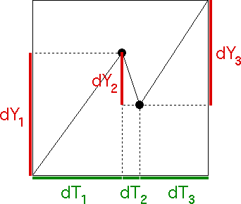

| Using the price and trading time increments, we construct the price vs trading time generator. | |||
|  | |||
| Note the price vs trading time generator is unifractal, because | |||
| |||
| That is, the same exponent relates |dYi| and dTi for i = 1, 2, and 3. |
Return to General Principle of Trading Time.